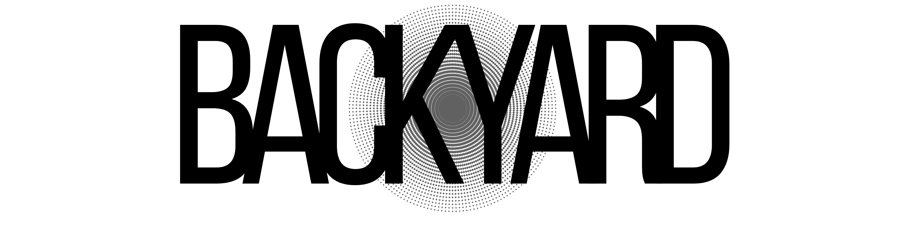

The Magazine
OUT THE NEW ISSUE!!
Issue No. 01: a selection from the publications of Backyard, now available to read online.
Read the issue PDF ->Last Scattering Surface
Where we talk of burning, aging, and the inevitable consequence of a star's journey.
Explore Last Scattering Surface →Space of Sound
This week in music, from 1 March to 14 March.
Explore Space of Sound →
The Magazine
Issue No. 01: a selection from the publications of Backyard, now available to read online.
Read the issue PDF ->
Observe the Fire
Reports on the climate crisis, with climate records and visual data from 1880 to the present.
Visit Observe the Fire ->"The cosmos is all that is, or ever was, or ever will be."
— Carl Sagan, Cosmos
Heralding Time
Read on SubstackLast Scattering Surface
Read on SubstackSpace of Sound
Read on SubstackAntonio Viscusi
Msc in Astrophysics, now at INFN. Post-graduate master's in Space Science. Blogger.